전자상거래운용사 (2016-04-17 기출문제)
1과목: 인터넷 일반
1. 다음 중 인터넷의 특징에 대한 설명으로 가장 올바르지 않은 것은?
- 개방형 네트워크로 운영이 된다.
- 누구든 상대방 컴퓨터의 주소만 알고 있으면 상대방에게 직접 정보를 발송할 수 있다.
- 정보 제공자와 수용자간에는 단방향 서비스만 가능하다.
- 정보의 공유가 자유로운 가상공간이다.
(정답률: 91%)

2. 다음 중 웹 페이지 화면 구성의 지침으로 가장 올바르지 않은 것은?
- 고객에게 정보 이해도를 높이도록 구성해야 한다.
- 화면의 계층 구조는 넓고 얕게 구성해야 한다.
- 다른 사이트로의 하이퍼링크 기능을 제공하지 말아야 한다.
- 판독성과 가독성을 높이도록 구성해야 한다.
(정답률: 92%)
3. 다음 중 웹 디자인 시, 쉽게 발생할 수 있는 디자인 실수들에 대한 개선점으로 가장 올바르지 못한 것은?
- 유연성 없는 검색 엔진 : 검색 내용의 중요성에 따라 목록의 순서를 제시하고 키워드 검색의 유연성을 제고시킨다.
- 방문한 링크 주소의 색깔 불변 : 방문을 완료한 사이트의 링크 색깔을 변경시키지 않는다.
- 고정된 폰트 사이즈 : 가독성을 높이기 위해 폰트 사이즈를 변경할 수 있는 아이콘을 제시한다.
- 광고 형태의 콘텐츠 디자인 : 배너 형태, 지나친 애니메이션, 팝업(Pop-up)창 등을 피하고, 배너 형태를 최소화한다.
(정답률: 76%)
4. 다음 글상자에서 설명하고 있는 용어는?
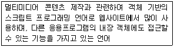
- SGML(Standard Generalized Markup Language)
- HTML(Hyper Text Markup Language)
- 자바스크립트(JavaScript)
- XML(eXtensible Markup Language)
(정답률: 76%)
5. 다음 중 CSS 언어의 기본 구성요소가 아닌 것은?
- 선택자
- 코드
- 속성
- 속성값
(정답률: 65%)
6. 다음 중 CSS에서 HTML의 ＜!·····＞와 같이 주석 표현을 위해 사용하는 것은?
- ／'·····'／
- ／*·····*／
- ／“·····”／
- ／¨·····¨／
(정답률: 86%)
7. 다음 중 HTML 태그의 기본 구조에 대한 설명으로 가장 올바르지 않은 것은?
- ＜HTML＞ ＜／HTML＞ : HTML 문서의 시작과 끝을 알리는 태그로, HTML 문서의 최상단과 최하단에 표기해야 한다.
- ＜HEAD＞ ＜／HEAD＞ : 문서의 일반적인 정보를 표현하는 태그로 머리말 부분이다.
- ＜TITLE＞ ＜／TITLE＞ : 웹 문서의 제목을 지정하는 태그로 ＜BODY＞와 ＜／BODY＞태그 사이에 삽입되어야 한다.
- ＜BODY＞ ＜／BODY＞ : 실제 웹 브라우저 창에 나타나는 여러 가지 내용이 들어간다.
(정답률: 75%)
8. 다음 중 HTML 표 태그와 이에 대한 설명이 잘못 짝지어진 것은?
- ＜TABLE width=“속성값”＞ ＜／TABLE＞ : 표의 너비를 지정한다.
- ＜TABLE border=“속성값”＞ ＜／TABLE＞ : 표의 테두리 두께를 지정한다.
- ＜TR＞ ＜／TR＞ : ＜TABLE＞ 태그 내에서 한 행(ROW)을 표시한다.
- ＜TD＞ ＜／TD＞ : 표의 높이를 지정한다.
(정답률: 74%)
9. 다음 중 HTML 태그의 하나로 이미지 파일을 웹 문서에 삽입할 때 사용하는 태그는?
- ＜BR＞
- ＜IMG＞
- ＜HR＞
- ＜TABLE＞
(정답률: 83%)
10. 다음 중 CSS에 대한 설명으로 가장 올바르지 않은 것은?
- HTML, XHTML, XML 같은 문서의 스타일을 꾸밀 때 사용하는 스타일 시트 언어이다.
- HTML로 문서의 뼈대를 만들면, CSS는 이 문서의 디자인 요소를 담당한다.
- 글꼴이나 배경색, 너비와 높이, 위치 등을 지정한다.
- 인터넷 서비스의 하나인 WWW를 통해 볼 수 있는 문서를 만들 때 사용하는 프로그래밍 언어이다.
(정답률: 74%)
11. 다음 중 HTML 글자 태그의 하나로 '＜SUP＞...＜／SUP＞' 태그가 뜻하는 것은?
- 글자에 밑줄을 표시한다.
- 글자를 위 첨자로 표시한다.
- 글자를 현재보다 한 단계 크게 표시한다.
- 글자를 강한 강조를 나타내기 위해 굵게 표시한다.
(정답률: 69%)
12. “＜ ＞ ...＜／ ＞” 기본 구조를 가지는 HTML 작성 방법과 달리 CSS(Cascading Style Sheets)는 중괄호 “{ }”를 사용한다. 코드 작성 시 (가)보다는 (나)와 같이 중괄호를 연 후 태그들을 중괄호 아래 줄에 쓰도록 하는데 그 이유로 가장 올바른 것은?
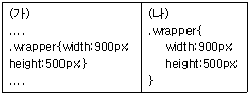
- 코드 작성 시 오류를 줄이기 위해서이다.
- 코드 작성 포맷(format)에 어긋나기 때문이다.
- 디자인을 아름답게 작성하기 위해서이다.
- 스타일(style)을 섬세하게 하기 위해서이다.
(정답률: 75%)
13. 다음 중 현재 사용하는 브라우저에서 보고 있는 화면의 HTML 소스를 볼 수 있는 방법으로 가장 올바른 것은?
- 왼손 마우스는 현재 사용하는 브라우저에서 해당 화면에 마우스를 갖다 놓고 왼쪽 마우스를 누르고 팝업 되는 메뉴에서 링크열기(O)를 선택한다.
- 오른손 마우스는 현재 사용하는 브라우저에서 해당 화면에 마우스를 갖다 놓고 왼쪽 마우스를 누르고 팝업 되는 메뉴에서 소스보기(V)를 선택한다.
- 왼손 마우스는 현재 사용하는 브라우저에서 해당 화면에 마우스를 갖다 놓고 오른쪽 마우스를 누르고 팝업 되는 메뉴에서 링크열기(O)를 선택한다.
- 오른손 마우스는 현재 사용하는 브라우저에서 해당 화면에 마우스를 갖다 놓고 오른쪽 마우스를 누르고 팝업 되는 메뉴에서 소스보기(V)를 선택한다.
(정답률: 72%)
14. 다음 중 자바스크립트 언어의 특징으로 가장 거리가 먼 것은?
- 자바스크립트는 인터프리터 언어이다.
- 자바스크립트는 클라이언트 스크립트 언어이다.
- 자바스크립트는 객체기반 언어이다.
- 자바스크립트는 라이브러리를 활용하는데 극히 제한적이다.
(정답률: 77%)
15. 다음 중 HTML 태그의 기본 구조의 특성으로 가장 올바르지 않은 것은?
- HTML 태그는 대소문자를 구별한다.
- 문자열 사이에 있는 하나 이상의 공백과 엔터 값과 탭 값은 무시된다.
- 태그는 '＜＞'안에 입력된다.
- HTML 태그는 보통 쌍을 이룬다.
(정답률: 73%)
16. 다음 중 가공된 자료와 웹 프로그램을 통합하여 HTML 문서를 작성할 때 고려해야 할 사항으로 가장 올바르지 않은 것은?
- 유지보수시의 편의성을 고려해야 한다.
- HTML 문서 저장 디렉토리 체계를 마련해야 한다.
- HTML 문서 이름 적용 규칙을 마련해야 한다.
- 특정 브라우저에서만 제공하는 기능을 사용해야 한다.
(정답률: 82%)
17. 정보윤리적 차원에서 볼 때, 다음 글상자에서 설명하고 있는 용어는?
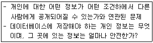
- 정확성 문제
- 재산권 문제
- 접근성 문제
- 사생활 침해 문제
(정답률: 84%)
18. 다음 중 검색엔진 최적화 방법으로 가장 거리가 먼 것은?
- URL 경로를 늘려서 복잡한 디렉토리 구조를 가져야 한다.
- 독창적이고 주제를 벗어나지 않도록 해야 한다.
- 사이트 맵을 생성해야 한다.
- 웹사이트의 인지도를 높여 검색 엔진 상위 등록을 위한 의도적인 백링크의 사용은 피해야 한다.
(정답률: 76%)
19. 다음 글상자에서 설명하고 있는 용어는?
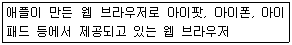
- 파이어폭스(Firefox)
- 크롬(Chrome)
- 사파리(Safari)
- 오페라(Opera)
(정답률: 77%)
20. 다음 중 IP(인터넷 프로토콜) 주소체계에 대해 비교 설명한 것 중에서 가장 올바르지 않은 것은?
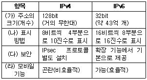
- (가)
- (나)
- (다)
- (라)
(정답률: 72%)
2과목: 전자상거래 일반
21. 다음 중 스타일을 꾸미는 방법으로 가장 거리가 먼 것은?
- HTML 문서 안에 style 속성을 사용한다.
- style 태그를 사용한다.
- CSS 파일을 별도로 만들어 HTML 문서에 연결시킨다.
- 메타 태그를 사용한다.
(정답률: 71%)
22. 다음 글상자에서 설명하고 있는 용어는?
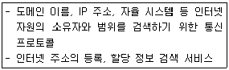
- 후이즈(whois)
- 유스넷(usenet)
- 핑거(finger)
- 고퍼(gopher)
(정답률: 67%)
23. 다음 중 업무를 목적으로 수집된 개인 정보 파일을 운용하기 위해서 개인 정보를 처리하는 공공기관 및 단체 등의 정보 처리자들이 준수해야 할 원칙으로 가장 올바르지 않은 것은?
- 개인정보의 처리 목적을 명확하게 하여야 하고, 그 목적에 필요한 범위에서 최소한의 개인정보만을 적법하고 정당하게 수집하여야 한다.
- 개인정보의 처리 목적에 필요한 범위에서 개인정보의 정확성, 완전성 및 최신성이 보장되도록 하여야 한다.
- 정보주체의 사생활 침해를 최소화하는 방법으로 개인 정보를 처리하여야 한다.
- 개인정보의 익명처리가 가능한 경우일지라도 익명에 의하여 처리되어서는 아니 된다.
(정답률: 82%)
24. 다음 글상자에서 설명하고 있는 용어는?
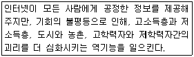
- 정보 과부하
- 인터넷 중독
- 디지털 디바이드(Digital divide)
- 사이버 스쿼팅(Cyber squatting)
(정답률: 81%)
25. 다음 글상자에서 설명하고 있는 용어는?
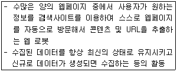
- 웹 클리퍼(clipper)
- 웹 크롤러(crawler)
- 왓클린(WATclean)
- 웹 클라우드(cloud)
(정답률: 75%)
26. 다음 중 시맨틱 웹(Semantic web)에 대한 설명으로 가장 올바르지 않은 것은?
- 컴퓨터 스스로 정보 자원의 뜻을 이해하고 논리적으로 추론하여 처리하는 지능형 웹이다.
- 컴퓨터가 이해할 수 있는 형태의 새로운 언어로 표현해 기계들끼리 서로 의사소통할 수 있는 웹이다.
- 컴퓨터가 스스로 문장이나 문맥속의 단어의 미묘한 의미를 구분하여 사용자가 원하는 정보를 제공할 수 있는 웹이다.
- 하이퍼텍스트 기능에 의해 인터넷상에 분산되어 존재하는 온갖 종류의 정보를 통일된 방법으로 찾아볼 수 있게 하는 광역 정보 서비스 및 소프트웨어이다.
(정답률: 66%)
27. 다음 글상자에서 설명하고 있는 용어는?
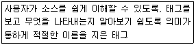
- table 태그
- div 태그
- semantic 태그
- span 태그
(정답률: 68%)
28. 다음 글상자의 URL 구조에 대한 설명으로 올바르지 않은 것은?
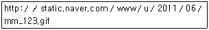
- “http:／／” 부분은 프로토콜이라 한다.
- “static.naver.com／” 부분은 자원을 가진 컴퓨터의 위치이다.
- “www／u／2011／06／” 부분은 자원을 가진 컴퓨터의 이름이다.
- “mm_123.gif” 부분은 사용자가 얻고자 하는 자원인 파일의 이름이다.
(정답률: 77%)
29. 다음 중 동영상·오디오·이미지 등 여러 가지 종류의 데이터 전송을 지원하기 위해 개발된 인터넷 전자메일의 표준 프로토콜로 가장 올바른 것은?
- SMTP(Simple Mail Transfer Protocol)
- S／MIME(Secure／Multipurpose Internet Mail Extension)
- POP(Post Office Protocol)
- IMAP(Internet Message Access Protocol)
(정답률: 63%)
30. 다음 글상자에서 설명하고 있는 용어는?
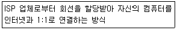
- 전용선 접속
- SLIP 접속
- Shell 접속
- UUCP 접속
(정답률: 75%)
31. 다음 글상자에서 설명하고 있는 용어는?
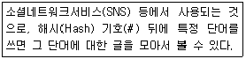
- 해시 태그
- 해시 함수
- 유니버설 해싱
- 이중 해시
(정답률: 85%)
32. 다음 중 금융과 정보기술의 합성어로, ICT 기술을 기반으로 금융서비스를 제공하는 것을 무엇이라고 하는가?
- 핀테크
- 재테크
- 인터넷 뱅킹
- 전자화폐
(정답률: 72%)
33. 다음 중 모바일 마케팅의 장점이 아닌 것은?
- 사용자의 성향에 맞는 광고가 가능하다.
- 최적의 시간에 맞게 효율적인 광고가 가능하다.
- 위치기반의 효율적 광고가 가능하다.
- 단방향으로 인한 지속적인 프로모션이 가능하다.
(정답률: 83%)
34. 다음 중 모바일 마케팅의 특징이 아닌 것은?
- 이동성
- 개인화
- 적시성
- 고정성
(정답률: 77%)
35. 다음 글상자에서 설명하고 있는 용어는?
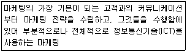
- 페이스북 마케팅
- 블로그 마케팅
- e-마케팅
- 소셜 마케팅
(정답률: 83%)
36. 다음 글상자의 괄호 안에 알맞은 용어는?
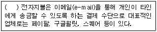
- P2P(peer-to-peer)
- 모바일
- 온라인
- 신용카드
(정답률: 76%)
37. 다음 중 전자상거래 기업의 대표적 물류 아웃소싱의 하나로 공급망의 물류기능을 외부에 위탁 운영하는 방법을 무엇이라고 하는가?
- 제1자 물류 아웃소싱
- 제2자 물류 아웃소싱
- 제3자 물류 아웃소싱
- 제4자 물류 아웃소싱
(정답률: 80%)
38. 다음 글상자에서 설명하고 있는 용어는?
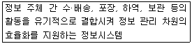
- 생산정보시스템
- 물류정보시스템
- 경영정보시스템
- 판매관리시스템
(정답률: 77%)
39. 다음 글상자에서 설명하고 있는 용어는?
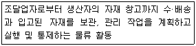
- 조달물류
- 생산물류
- 판매물류
- 폐기물류
(정답률: 65%)
40. 다음 글상자에서 설명하고 있는 전자상거래 유형은?
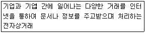
- C2C
- B2C
- B2B
- G2C
(정답률: 72%)
3과목: 컴퓨터 및 통신 일반
41. 다음 글상자에서 설명하고 있는 전자지불 수단은?
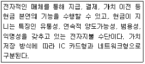
- 전자화폐
- 전자상품권
- 전자어음
- 전자수표
(정답률: 84%)
42. 다음 중 모바일 애플리케이션을 자유롭게 사고 팔 수 있는 온라인상의 모바일 콘텐츠 장터를 무엇이라고 하는가?
- 앱스토어 상거래
- 온라인 상거래
- 인터넷 상거래
- 전자상거래
(정답률: 72%)
43. 다음 중 인구통계학적 특성과 가장 거리가 먼 것은?
- 연령 분포
- 라이프스타일
- 성별
- 출생률
(정답률: 83%)
44. 다음 중 공급자와 소비자 간에 이루어지는 소매 형태의 전자상거래를 무엇이라고 하는가?
- B2B
- G4C
- C2C
- B2C
(정답률: 66%)
45. 다음 중 디지털 상품에 대한 설명으로 가장 올바른 것은?
- 일반적인 상품 배송과 동일하게 택배 서비스를 이용한다.
- 일반적인 상품에 비해 소요되는 물류비용이 많이 든다.
- 주문과 동시에 배송이 가능하다.
- 불법 복제가 어렵다.
(정답률: 74%)
46. 다음 중 재화나 용역을 거래함에 있어서 그 전부 또는 일부가 전자문서에 의하여 처리되는 거래를 무엇이라고 하는가?
- 전자상거래
- 전자우편
- 전자무역
- 전자화폐
(정답률: 80%)
47. 다음 중 인터넷을 통하여 컴퓨터들 간에 의사소통을 할 수 있도록 하는 프로토콜로, 데이터의 흐름관리, 데이터의 정확성 확인, 패킷을 목적지 까지 전송하는 역할을 담당하는 인터넷에서 사용하는 대표적인 표준 통신 규약은?
- TCP／IP
- FTP
- HTTP
- HTML
(정답률: 68%)
48. 다음 글상자의 괄호 안에 알맞은 용어는?
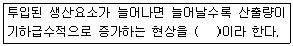
- 수확 체증 법칙
- 수확 체감 법칙
- 메트카프의 법칙
- 소비자 주도 시장
(정답률: 59%)
49. 다음 글상자에서 설명하고 있는 용어는?
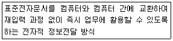
- EDI
- 사이버무역
- 인터넷무역
- e-마켓플레이스
(정답률: 68%)
50. 다음 중 전자상거래가 발달하게 된 배경으로 올바르지 않은 것은?
- 인터넷의 등장
- WWW와 웹의 출현
- 멀티미디어 자료 처리 기술의 발전
- 현금 사용의 증가
(정답률: 77%)
51. 다음 중 빅데이터 응용과 가장 거리가 먼 것은?
- SNS 데이터로부터 특정 분야에 관련된 주제어들의 출현 횟수 계산
- 국민건강보험공단에 집결되는 진료내역 데이터와 트위터 데이터, 네이버 뉴스 데이터 등에 대한 분석을 통한 질병 예측
- 다양한 관측 장치로부터의 데이터를 사용하는 기상정보 분석
- 정형화된 데이터만을 대상으로 현재 상황을 분석
(정답률: 77%)
52. 다음 중 클라우드 컴퓨팅 기반 서비스를 이용할 때의 장점으로 가장 올바른 것은?
- 데이터 효율성이 증가된다.
- 시스템 개발이 용이하다.
- 시스템 정책 설정 및 변경이 용이하다.
- 컴퓨터 하드웨어를 위한 초기 투자비용을 줄일 수 있다.
(정답률: 69%)
53. 다음 중 사물인터넷 응용과 가장 거리가 먼 것은?
- 도난 차량 추적
- 자율주행 자동차
- 주문형 비디오 시청
- 환경 설비의 원격 모니터링
(정답률: 77%)
54. 다음 중 컴퓨터 바이러스에 대한 예방 방법으로 가장 올바르지 않은 것은?
- 네트워크 공유를 통해 데이터를 이용한다.
- 소프트웨어 업데이트를 정기적으로 수행한다.
- 정품 소프트웨어를 사용한다.
- 출처가 불분명한 이메일은 읽지 않고 삭제한다.
(정답률: 72%)
55. 다음 글상자에서 설명하고 있는 용어는?
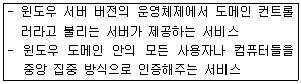
- 방화벽
- 동적 호스트 구성 서비스
- 레지스트리
- 액티브 디렉토리
(정답률: 47%)
56. 다음 중 윈도우 운영체제가 지원하는 기능이 아닌 것은?
- NTFS 파일 시스템
- 섀도우 패스워드 파일
- 압축 폴더와 암호화 폴더
- 액티브X
(정답률: 61%)
57. 다음 중 윈도우 운영체제에서 운영이 가능한 서버로 올바르지 않은 것은?
- NIS(Network Information Service) 서버
- 데이터베이스(Database) 서버
- 메일(Mail) 서버
- 웹(Web) 서버
(정답률: 54%)
58. 다음 중 윈도우 운영체제에 포함되지 않는 것은?
- 레지스트리
- 마이크로소프트 오피스
- 윈도우 커널
- 윈도우 탐색기
(정답률: 68%)
59. 다음 중 컴퓨터의 CPU를 구성하는 요소가 아닌 것은?
- 레지스터
- 연산장치
- 제어장치
- 주기억장치
(정답률: 58%)
60. 다음 중 플래시 드라이브가 자기디스크에 비해 갖는 장점으로 가장 올바른 것은?
- 저장 용량이 많다.
- 배터리의 사용 시간이 줄어든다.
- 전력 소모가 많다.
- 빠른 속도로 데이터 읽기와 쓰기가 가능하다.
(정답률: 73%)